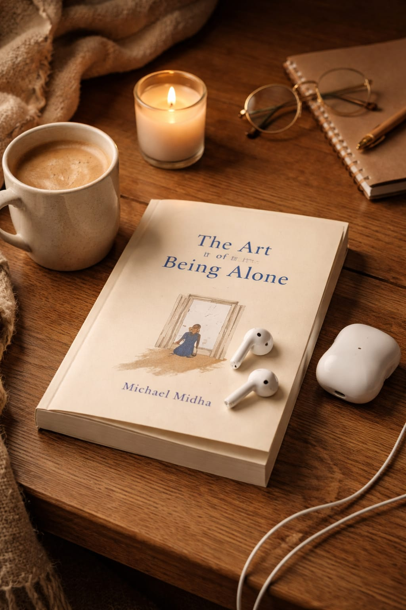

My Hobbies

Music
I love listening music.It is a universal language that connects peopleall over the world. Music can express feelings,emotions,and thoughts without using words.Listening music helps me to feel happy,relaxed and peaceful. Music is beautiful part of my life.It brings happiness,reduces stress,and connets people.Music"HEALS MY PAIN" Music makes our life more enjoyable and meaningful.

Reading Novels
I enjoy reading books about tecnology and they improves my imagination,creativity skills. Reading novels is one of the most enjoyable and relaxing hobbies.A novel is a long story written in a books that takes readers into a different world of imagination,emotions and expiriences. Three is one of my favourite novel"THE ART OFBEING ALONE".That teaches us how to be happy,and peaceful even when we are alone.Many people think being alone means feeling lonely,but this book explains that being alone can actually helps us"UNDERSTAND OURSELVES"better.

Chilling with friends
Spending time with friends is one of the happiest moments in life. Friends make our life more enjoyble and comfort.Whenever I feel stressed or bored,talking and spending time with friends makes us feel relaxed and happy. We usually spend time with friends by going out,eating together laughing together watching series together. These small moments create beautiful memories in our lives. In free time,I like spending time time with my friends. We laugh,share our silly gosips,and i really like spending time with them. These memories stay with us forever and make our life more meaningful.